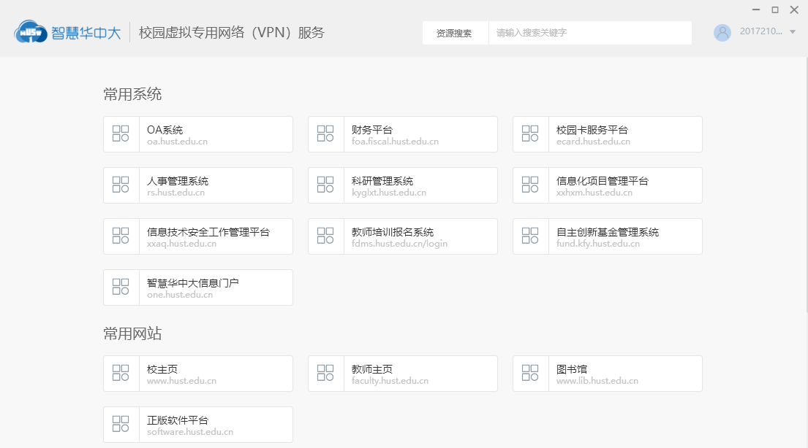

深信服 EasyConnect 付费账本：老 SSL VPN 还续吗？
你单位的 EasyConnect 背后的 SSL VPN 网关已经停产了——是掏腰包续服务费撑着，还是花钱迁移零信任 aTrust？这笔 IT 采购账算给你听。
EasyConnect 到底值不值得掏钱？这个问题挺有意思——大多数人用到它的时候根本没花过钱，客户端从单位登录页或 EasyConnect 的下载页就能拿，连安装包都不用找。但真正的账藏在背后：你的单位为了让你能用这个客户端，每年在 SSL VPN 网关和服务费上花了多少？而现在产品线已经停产了，是续一年撑着，还是换零信任方案？这笔账得算明白。
先给定价拆透
EasyConnect 是深信服 SSL VPN 产品线的客户端——它的官网上能看到完整的产品谱系，卖给企业和高校的是后端网关硬件。老方案是传统的硬件买断加年服务费模式——一台 SSL VPN 网关当年采购价几万到十几万不等，每年再掏 15%-20% 的服务费续技术支持。2024 年深信服宣布 SSL VPN 产品线停产下架，网关不再对外销售，但存量设备还能跑，续服务费的窗口也还留着——只是没人告诉你这个窗口还开多久，官方只说存量环境仍在服务。
接替者是零信任访问控制系统 aTrust，转向订阅制或按节点数计费，具体报价得找销售谈。信创终端（麒麟、统信 UOS 等）在传统 SSL VPN 体系下不受支持，国产化硬要求摆在那里的单位，没得选。

分三类人算这笔账
定价清楚了，关键是你和单位属于哪一档远程使用强度。我按真实工作场景拆成三类，每一档算时间账。
轻度远程：一周连个两三次
典型场景：小团队、偶尔在家紧急收邮件、处理个把文档，设备只有一两台。
这种情况 SSL VPN 网关的年服务费对单位来说其实是个负担——一年续服务费够买任何免费自建方案的 N 倍。但话说回来，你个人完全不掏这笔钱，用的是单位已有基础设施的残值。真正的决策点在 IT：一个只有 5 个远程用户的小团队，要不要为这 5 个人续 SSL VPN 网关服务费？我的判断是不值——让 IT 搭个 frp 或者买个最便宜的云服务器跑 tailscale，总成本一年不到几百块，还能顺便覆盖未来 10 倍的用户增长。
个人远程内网自用的，更不用想了——tailscale 免费层够三台设备，frp 自建一台轻量云服务器一年百八十块，EasyConnect 这种级别的客户端对你来说根本没存在感。
主力远程：日均 4 小时以上
典型场景：每天远程办公 4-8 小时，要访问内网 OA、代码仓库、文件服务器，偶尔走远程桌面。
这种情况下，SSL VPN 续不续费直接看两个指标：掉线频率和会话超时。从 EasyConnect 的文档里看到，网络切换必掉线（Wi-Fi 与有线切换、笔记本睡眠唤醒，隧道都会断）、长时间挂机会话被安全策略踢掉——这是 VPN 的物理规律和安全设计，改不了。每断一次重连要 20-30 秒，一天断个三五次就是 10-15 分钟的损耗。按日均 8 小时远程算，一周就是 1 小时浪费。
如果续服务费一年 2 万，你的时薪 100 块，那 SSL VPN 本身在给单位赚回续服务费的机会都不够。换 aTrust 的话，订阅费按 20 个远程节点算大约一年 3-4 万（行业报价区间），但零信任架构的稳定性、会话保持能力、多端切换体验明显好一截——隧道重连速度快、会话策略更灵活、移动端切后台回来直接恢复不用重新认证。主力用户的时间效率价值，已经够覆盖这部分差价。
这档还有一个隐性成本：多因素认证。SSL VPN 网关的认证方式有六类（密码、短信、证书、USB-Key、动态令牌、AD 对接），单位开了双因素登录的，每次都要走"输密码→等验证码→输码"三步链，验证码收不到还要查绑定手机号对不对、是不是换号没更新。这些摩擦成本加起来，主力用户一个月至少浪费两三个小时。
重度场景：多人并发 + 高安全
典型场景：几十人同时远程、多终端（手机+笔记本+远程桌面）、还要多因素认证和审计日志。
这种情况 SSL VPN 网关的硬件资源瓶颈会先到——并发数不够时大家一起卡，加硬件扩容又碰到停产买不到新网关的尴尬。更麻烦的是信创终端不受支持，国产化硬要求摆在那里的单位直接卡死。
重度场景的单位，采购周期不会太短，但从决策到落地的过程中，每多拖一个月就是技术债增加一个月。审计合规、安全加固、信创适配，这些都是零信任方案的内置能力，传统 SSL VPN 网关做不到。这种情况别算小账，直接评估 aTrust 或其他 ZTNA 方案。
不付钱还有别的路吗
有，但各有代价。三条替代路线摆在这里：
路线一：硬扛 SSL VPN，不续服务费。 代价是没有技术支持。网关出问题了只能自己排查找厂商老社区的帖子，硬件坏了买不到新件。短期省了续服务费，长期碰到故障时排查成本会把你之前省的全亏进去。而且停产的设备被淘汰只是时间问题，拖得越久迁移成本越高。
路线二：自建免费方案。 frp 加云服务器，或者 tailscale、zerotier 这类商业免费层。零成本起步，小规模用完全够用。但代价是你自己当运维——frp 配置错了等于裸奔，tailscale 免费层有设备数限制，而且这些方案的认证体系跟企业级的多因素认证、审计日志比起来不在一个量级。自己搞的东西出了安全锅，IT 背锅。
路线三：混合过渡。 先给主力用户切 aTrust，轻度用户继续走老 SSL VPN，等网关真跑不动了再全量迁移。这样决策压力小，但两套方案并存的运维复杂度会增加——客户端不兼容、认证方式不统一、日志分散难排查，这些都是混合期的隐性成本。
最后给你一张决策对照表
别纠结，对照自己的使用强度三秒选：
- 重度远程用户（多人并发 + 高安全要求 + 信创适配）：闭眼掏——别算小账，拖得越久技术债越大，直接评估零信任方案
- 主力远程用户（日均 4+ 小时 + 多终端）：建议掏——算一算你的时间成本，单位时间效率损失已经够覆盖 aTrust 的订阅费了
- 轻度远程用户（每周 <3 次 + 偶尔用）：可以等等——或者建议单位搞自建方案，不值得为偶尔的远程花大钱
- 个人远程内网自用：永远不用掏——tailscale 免费层够用，frp 自建成本可忽略
一句话总结：EasyConnect 客户端对你免费，但背后的远程接入方案要不要付费，全看你和单位的远程使用强度。别为了省小风险大，也别为了几乎不用的功能掏冤枉钱。
深信服的替代路线走的是零信任方向，如果你刚好在评估远程接入方案，可以去 EasyConnect 官网查一查 aTrust 的具体参数和报价，再去 EasyConnect 下载页拿个最新版客户端体验一下存量环境的实际状态，进阶用法和排障细节在 EasyConnect 文档里都能找到，尤其是会话超时和掉线排查那几页。这些资料在 GitHub、Gitee、GitCode 三个仓库都有同步备份，感兴趣的可以顺手翻一下。